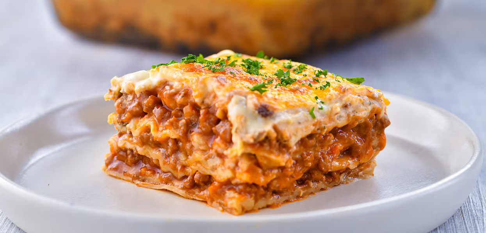

Lasagna
Tasty and easy to prepare recipe for a family dinner

Ragu
- 600g minced meat mixture
- 1 onion
- 1 carrot
- 1/2 yellow pepper
- 250g peeled tomatoes (I used from Sun Food)
- 2 tablespoons of tomato paste
- 3 tablespoons of oil
- Salt
- Pepper
- 3 sprigs of green parsley
- 3-4 sprigs of green dill
Bechamel
- 50 g butter
- 50 g flour
- 600 ml milk
- salt
- pepper
Lasagna Sheets
- 9 lasagna sheets (this was needed for my dish)
- 150 g cheese
- 1 teaspoon butter
- Prepare the vegetables: Chop the onion, peel and grate the carrot, dice the bell pepper, and chop the tomatoes.
- Sauté the vegetables: Heat oil in a pan, add the onion, bell pepper, and carrot, and sauté for 3-4 minutes.
- Add the meat: Incorporate the minced meat and stir well. Add a cup of water and let it simmer for 10 minutes. Add the tomatoes, season with salt and pepper, then add the tomato paste and let it cook for another 2 minutes.
- Prepare the bechamel sauce: In a thicker-bottomed pot, melt the butter, add the flour, mix, and gradually pour in the milk, stirring continuously until it thickens. Season with salt, pepper, and oregano.
- Assemble the lasagna: In a greased baking dish, add a layer of béchamel sauce, 3 lasagna sheets, half of the meat mixture, béchamel sauce, and repeat the layers (lasagna sheets, meat sauce, lasagna sheets, and the remaining béchamel on top).
- Finish: Grate cheese and sprinkle it on top.
- Bake: Preheat the oven and bake the lasagna for 50-55 minutes until golden. Let it cool slightly before serving.